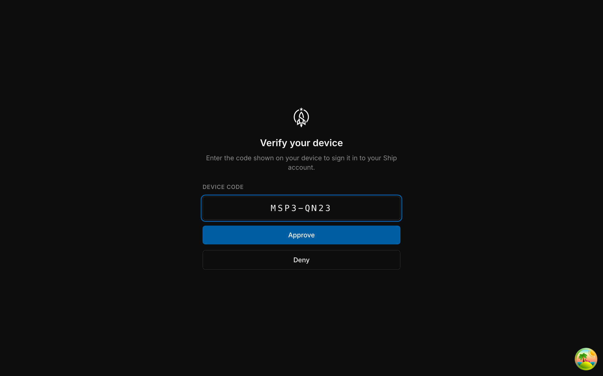
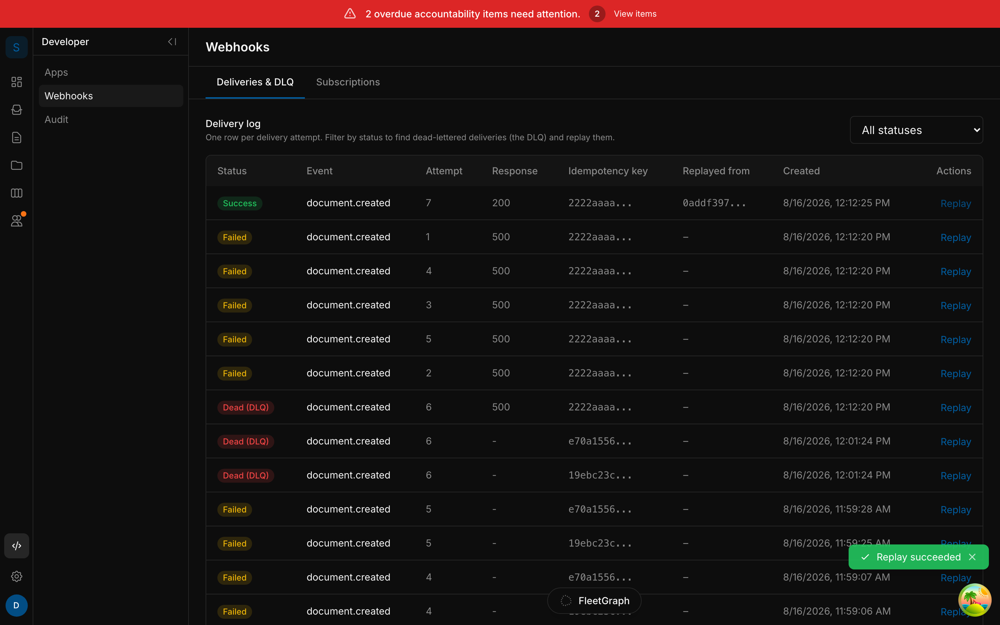
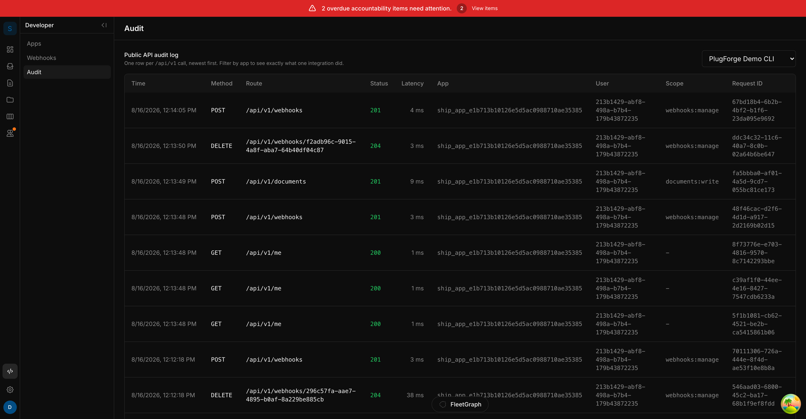

Fresh terminal → npm install the SDK → ship login → ship webhooks tail → ship docs create → a webhook lands, HMAC-verified client-side.
No password ever touches the terminal, and the token carries exactly the scopes it asked for.
Left: real stdout. Right: real browser frame of the consent screen, same run.

Same function the CI drill uses to assert tamper-rejection on every push. From @ship/sdk — 4.97 kB gzipped, zero runtime dependencies.


A third party can build against Ship the way they'd build against Stripe or GitHub — and CI proves the install-to-first-event path stays fast, signed, and replayable on every push.